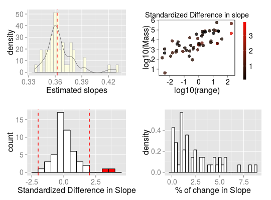

influ_phylolm(formula, data, phy, model = "lambda", cutoff = 2, track = TRUE, ...)
phy.data.lambda.phylolminflu_phylolm returns a list with the following
components:
cutoff: The value selected for cutoff
formula: The formula
full.model.estimates: Coefficients, aic and the optimised
value of the phylogenetic parameter (e.g. lambda) for the full model
without deleted species.
influential_species: List of influential species, both
based on standardised difference in interecept and in the slope of the
regression. Species are ordered from most influential to less influential and
only include species with a standardised difference > cutoff.
influ.model.estimates: A data frame with all simulation
estimates. Each row represents a deleted species. Reported are the calculated
regression intercept (intercept), difference between simulation
intercept and full model intercept (DFintercept), the standardised
difference (sDFintercept), the percentage change in intercept compared
to the full model (intercept.perc) and intercept p-value
(pval.intercept). All of these are also reported for the regression
slope (DFslope etc.). Additonally, model aic value (AIC) and
the optimised value (optpar) of the phylogenetic parameter
(e.g. kappa or lambda, depends on phylogeneticmodel used) are
reported.
data: Original full dataset.
errors: Species where deletion resulted in errors.
Performs leave-one-out deletion analyis for phylogenetic linear regression, and detects influential species.
This function sequentially removes one species at a time, fits a phylogenetic
linear regression model using phylolm, stores the
results and detects influential species.
All phylogenetic models from phylolm can be used, i.e. BM,
OUfixedRoot, OUrandomRoot, lambda, kappa,
delta, EB and trend. See ?phylolm for details.
influ_phylolm detects influential species based on the standardised
difference in intercept and/or slope when removing a given species compared
to the full model including all species. Species with a standardised difference
above the value of cutoff are identified as influential. The default
value for the cutoff is 2 standardised differences change.
Currently, this function can only implement simple linear models (i.e. $trait~ predictor$). In the future we will implement more complex models.
Output can be visualised using sensi_plot.
Here still: reference to phylolm paper + our own?
library(sensiPhy) # Loading data and phylogeny: data(alien) trait <- alien$data phy <- alien$phy[[1]] # Run sensitivity analysis (influential species) out <- influ_phylolm( log10(Mass) ~ log10(range), data = trait, phy = phy)Warning message: NA's in response or predictor, rows with NA's were removed Warning message: Some phylogeny tips do not match species in data,species were dropped from phylogeny or data Used dataset has 51 species that match data and phylogeny[1] "1 / 51" [1] "2 / 51" [1] "3 / 51" [1] "4 / 51" [1] "5 / 51" [1] "6 / 51" [1] "7 / 51" [1] "8 / 51" [1] "9 / 51" [1] "10 / 51" [1] "11 / 51" [1] "12 / 51" [1] "13 / 51" [1] "14 / 51" [1] "15 / 51" [1] "16 / 51" [1] "17 / 51" [1] "18 / 51" [1] "19 / 51" [1] "20 / 51" [1] "21 / 51" [1] "22 / 51" [1] "23 / 51" [1] "24 / 51" [1] "25 / 51" [1] "26 / 51" [1] "27 / 51" [1] "28 / 51" [1] "29 / 51" [1] "30 / 51" [1] "31 / 51" [1] "32 / 51" [1] "33 / 51" [1] "34 / 51" [1] "35 / 51" [1] "36 / 51" [1] "37 / 51" [1] "38 / 51" [1] "39 / 51" [1] "40 / 51" [1] "41 / 51" [1] "42 / 51" [1] "43 / 51" [1] "44 / 51" [1] "45 / 51" [1] "46 / 51" [1] "47 / 51" [1] "48 / 51" [1] "49 / 51" [1] "50 / 51" [1] "51 / 51"No errors found. All single deletions were performed and stored successfully. Please, check outpu$influ.model.estimates.# Check most influential species for slope and intercept: summary(out)$`Influential species for the Slope` [1] "Lepus_arcticus" "Capra_hircus" $`Slope Estimates` Species removed Slope DFslope Change(%) Pval 1 Lepus_arcticus 0.4287865 0.06660245 18.4 1.441385e-06 2 Capra_hircus 0.4205894 0.05840536 16.1 8.938528e-07 $`Influential species for the Intercept` [1] "Didelphis_marsupialis" "Lepus_arcticus" "Sorex_cinereus" "Capra_hircus" $`Intercept Estimates` Species removed Intercept DFintercept Change(%) Pval 1 Didelphis_marsupialis 3.647453 0.05790859 1.6 2.059043e-09 2 Lepus_arcticus 3.643745 0.05420063 1.5 1.065329e-09 3 Sorex_cinereus 3.637555 0.04800998 1.3 5.137809e-11 4 Capra_hircus 3.635387 0.04584196 1.3 2.356100e-10# Plot results: sensi_plot(out)
phylolm, samp_phylolm,
influ_phyloglm,sensi_plot